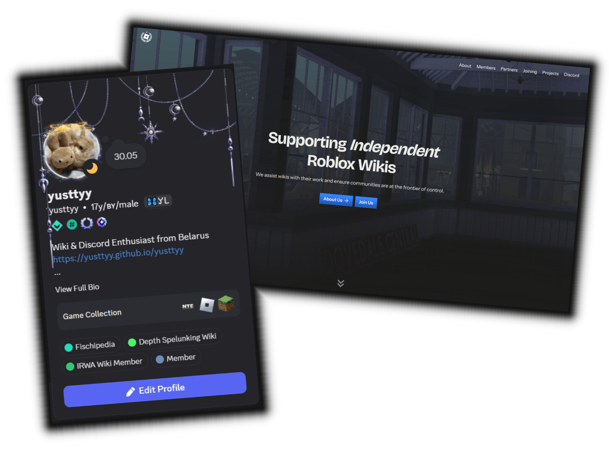
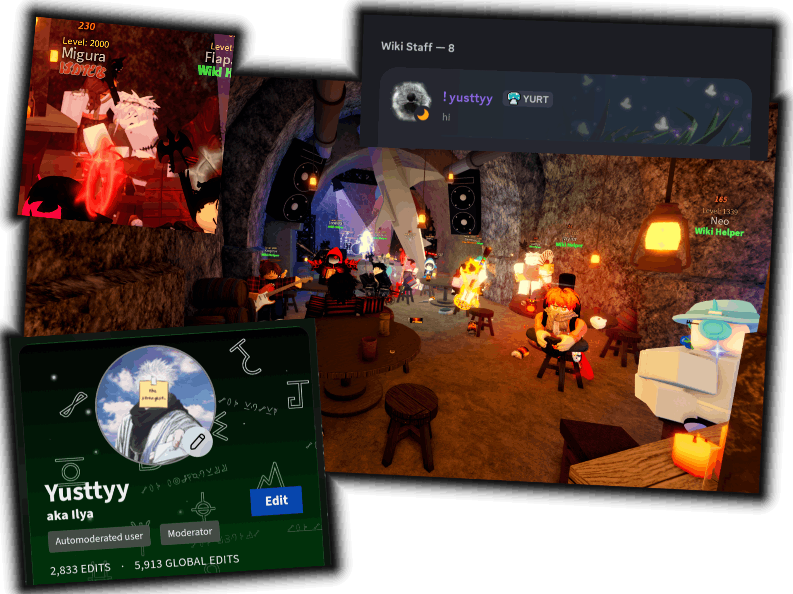
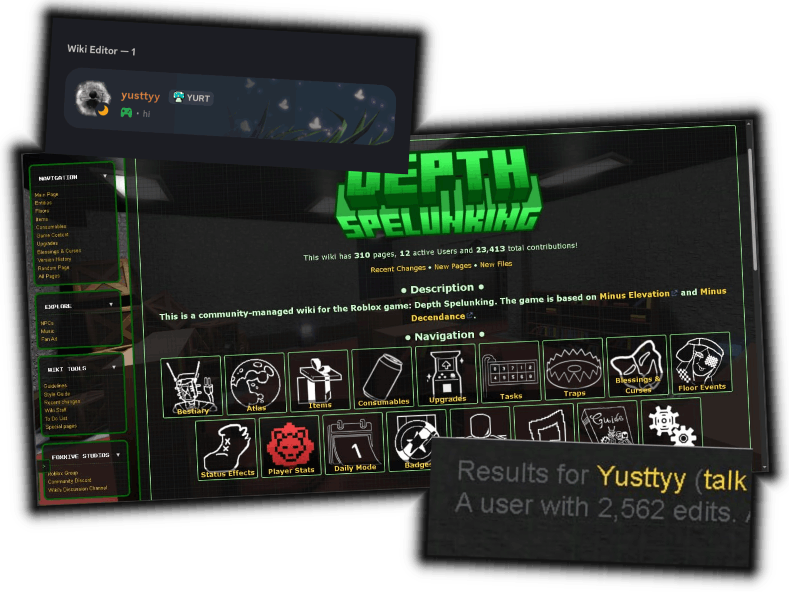
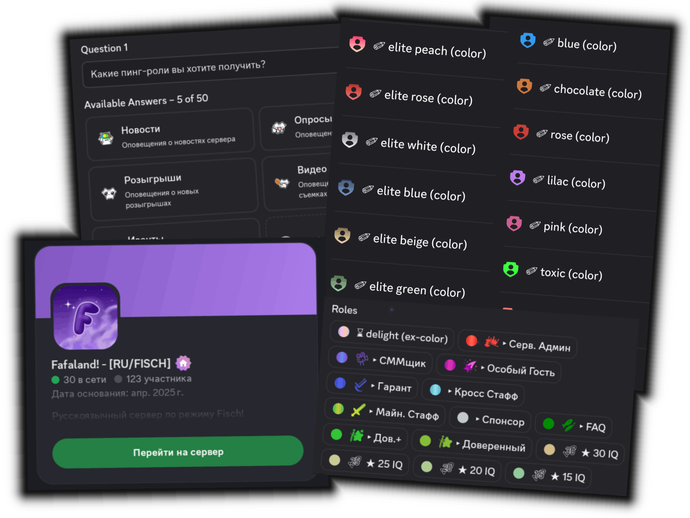
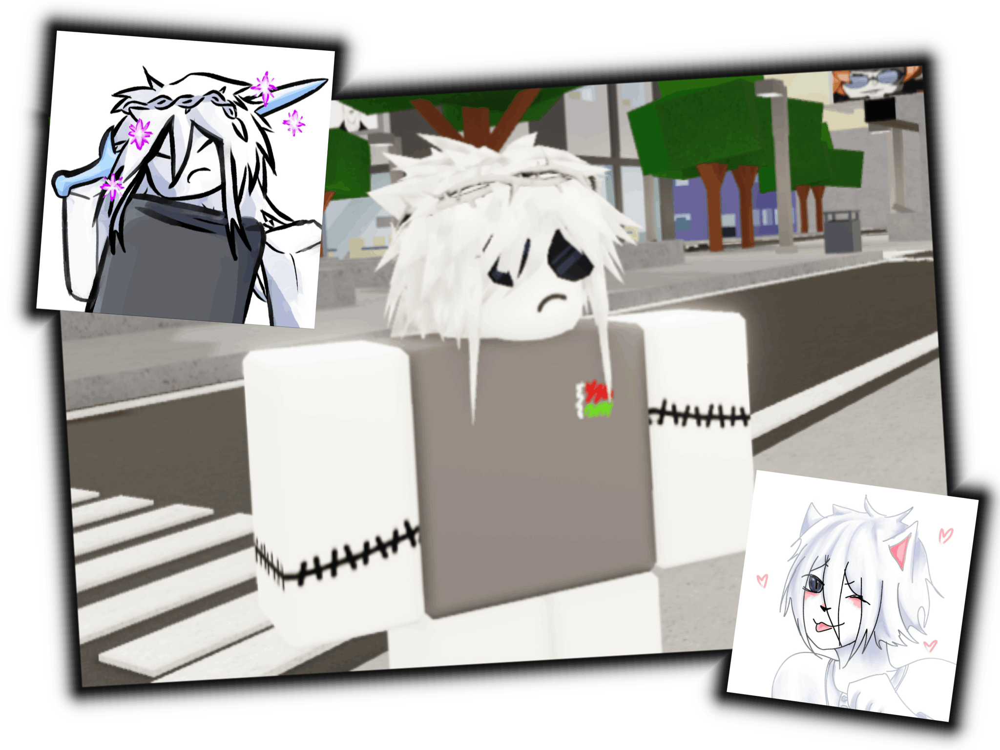
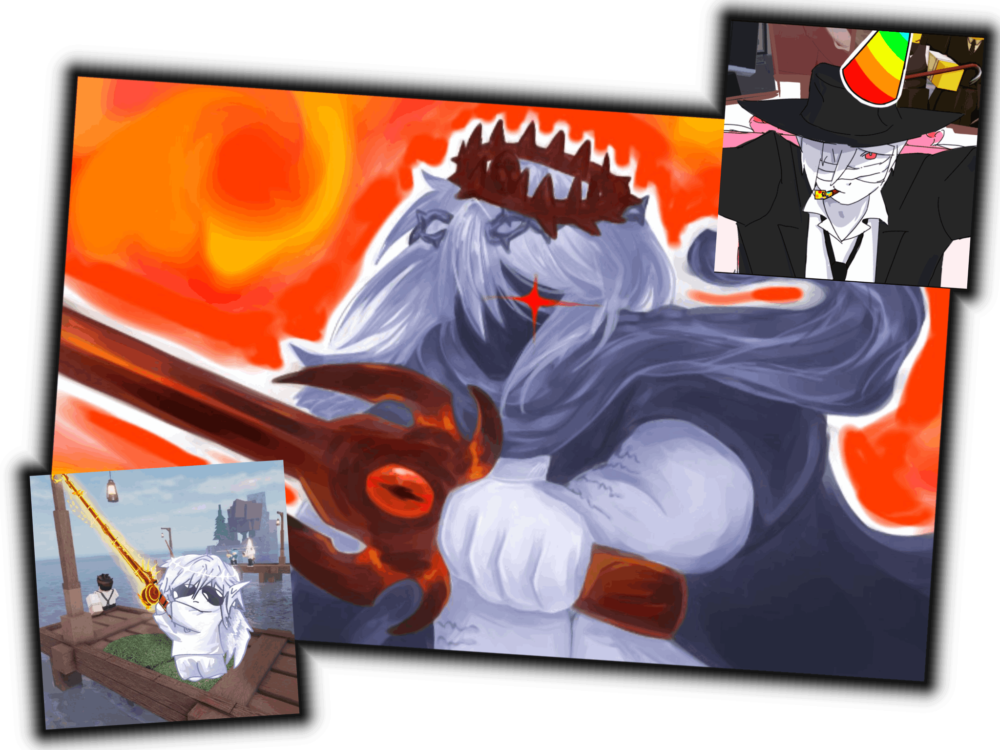

Last update: June 7th
Hi, I'm Yusttyy!
Also known as yusty
My name is Ilya, I'm 18 and I live in Belarus (🇧🇾). I speak Russian natively and English as a second language. I'm not really into gaming - I prefer working on my own projects that help others, such as contributing to wikis or managing discord servers. I have some experience in both areas, and I'm always happy to gain more.
Currently, I'm practicing with CSS and working with templates, page styling, QoL features, creating and implementing categories, updating rules and regulations, and handling any other tedious tasks. I can also create pages and handle other basic tasks. I don't have any experience as a bureaucrat, but for the most part, I understand how everything works. I have my own test wiki, where I check core settings and templates, and only after that do I transfer the changes to one of the wikipedias I work on.
Here is my Global Miraheze account information
I'm a member of the Independent Roblox Wiki Alliance (IRWA), which is basically a group of independent Roblox wikis working together. The idea is to help each other grow and get things done - whether that's through direct support, building tools, or just helping newer wikis find their own space. I joined the alliance because I'm a staff member of Fischipedia, and after some time I brought in another wiki.


My experience with wikis started with Fischipedia - the official wiki for Fisch, and one of the largest wikis created on Miraheze. I created my account in December 2024, and by January 2025 I had become an official editor. After working on it for 9 months (with some breaks), in October of that same year I became a moderator (or Wiki Staff). Today, I am one of the oldest editors still working on the wiki.
Currently, I'm inactive and have over 2800 edits.
https://fischipedia.org/wiki/User:Yusttyy
The second wiki I work on is Depth Spelunking Wiki. I made my first edit there on February 7th, and in less than two months I became an interface admin. As I mentioned earlier, I was the one who suggested this wiki join the IRWA alliance.
Currently, actively working on it and have over 2500 edits.
https://depthspelunking.miraheze.org/wiki/User:Yusttyy

Currently, I'm working on YurtLink
Бла-бла-бла


The last server I managed was Fafaland. I created it to bring a small community together and help it grow. I was in charge of both the technical side and the day-to-day management — creating unique channels and styling them, designing nice role colors and icons, setting up color-roles that members could earn and trade later, building unusual automated systems with those color-roles, making interesting custom bot commands, creating polls and votes, and organising events. For the most part, I handled everything on the server by myself. On top of that, I covered the costs for server boosts to reach Level 2, as well as for a custom tag and gradient roles. I also wanted to fund a Minecraft server myself, but I never got the opportunity. Unfortunately, due to internal drama among the admin team, the server had to be shut down, and at that point it had over 150 members.
Before that, I worked on setup and management for a Russian-speaking server with 1500+ members - Hizoka's Fishing Hub. I was the only admin there for almost a year. My responsibilities were pretty similar to Fafaland - for example, creating and styling channels, designing roles, creating interesting and unique features, and so on. Just like on the next server, I also spent my own money on boosts.


There were also a few other servers, including Telegram chats, where I was made deputy head, and sometimes given full control. Same as before - I took on almost all the responsibilities myself.
Alongside wiki editing and Discord management, I also have experience in Game Testing for Please Hold, Receiver!.
Бла-бла-бла